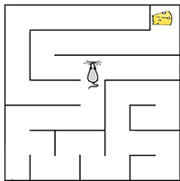

DID YOU KNOW
THAT RATS ARE KNOWN TO SHARE FOOD WITH EACH OTHER?
, . (_ ) _ )_ _(_ ( )
♡
( ) "-oo-" "o^o" =\/= =.=
Visual, auditory and other cues are used to indicate hunger and solicit food donations from fellow rats.
